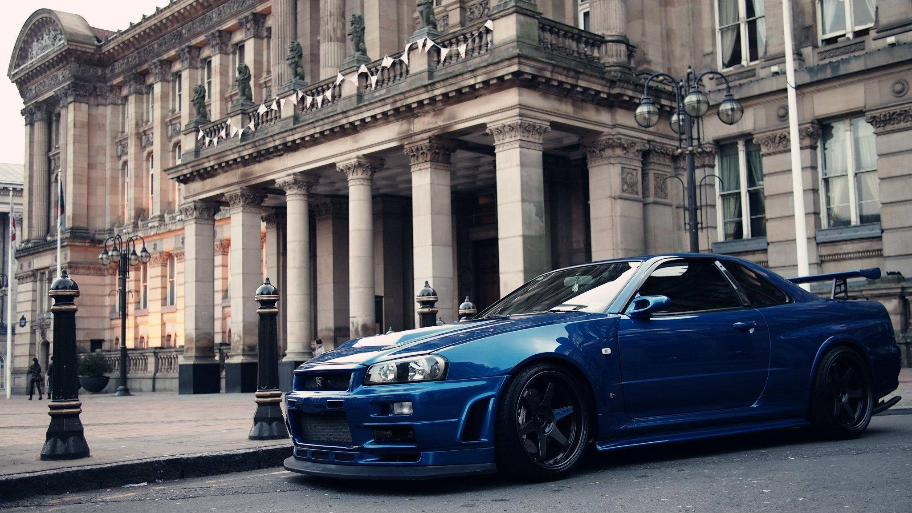

Nissan Skyline GT-R (R34)
Nissan Skyline GT-R R34 — это культовый спортивный автомобиль, который был выпущен компанией Nissan в период с 1999 по 2002 годы. Этот автомобиль стал известен благодаря своей высокой производительности и культовому статусу, особенно среди поклонников японских автомобилей.
Основные характеристики:
Двигатель: RB26DETT, 2.6-литровый рядный шестицилиндровый двигатель с двумя турбокомпрессорами.
Мощность: около 280 лошадиных сил (210 кВт).
Трансмиссия: 6-ступенчатая механическая коробка передач.
Привод: полный привод (ATTESA E-TS).
Выпуск: Производился в Японии.
Двигатель: RB26DETT, 2.6-литровый рядный шестицилиндровый двигатель с двумя турбокомпрессорами.
Мощность: около 280 лошадиных сил (210 кВт).
Трансмиссия: 6-ступенчатая механическая коробка передач.
Привод: полный привод (ATTESA E-TS).
Выпуск: Производился в Японии.
Важные факты:
Известен благодаря фильмам и видеоиграм, включая серию "Fast & Furious".